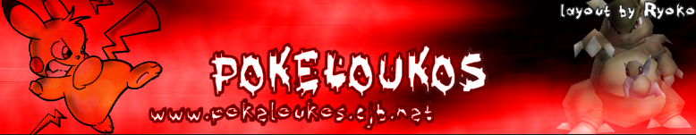
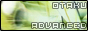
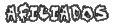
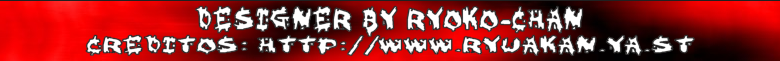

|
Publicidade: 468 x 60
Projeto!
olá, venho aqui em nome da §WL§ [World Leagues] para a PL [PokéLoukos], estaremos propondo um projeto de uma fanfic chamada Gonbe Adventure, que tá no 6º episódio.
Gonbe já é popular no Japão.
Aê, pessoal, voltei com força total e trago uma news sobre Gonbe: seu tipo é Normal, pode ser a pré-evolução de Snorlax. Já é popular no Japão!
Finalmente
Nossa, finalmente lançou os novos episódios de Pokémon Advanced Generation, fui! |
 >Seu site aqui 
1 poké loukos online. |
